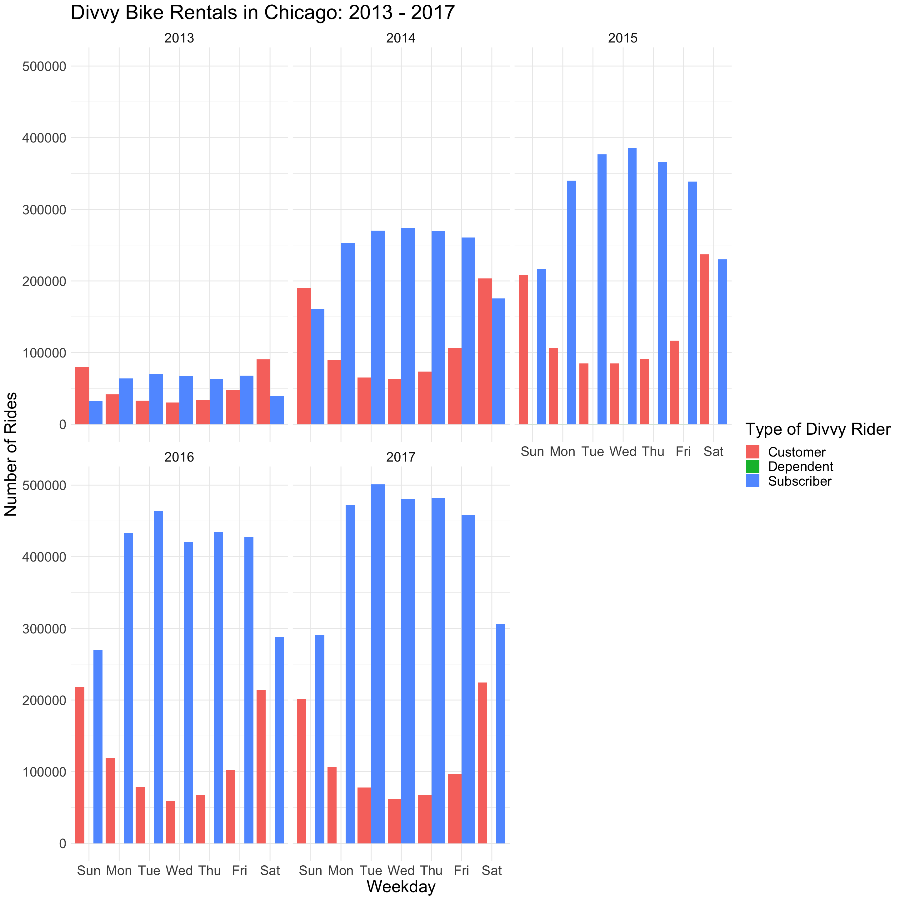
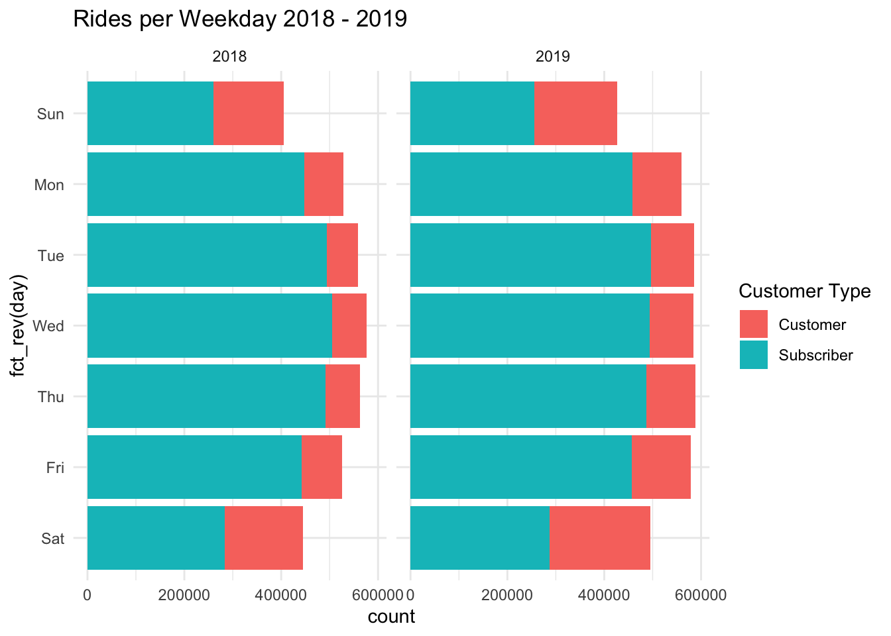
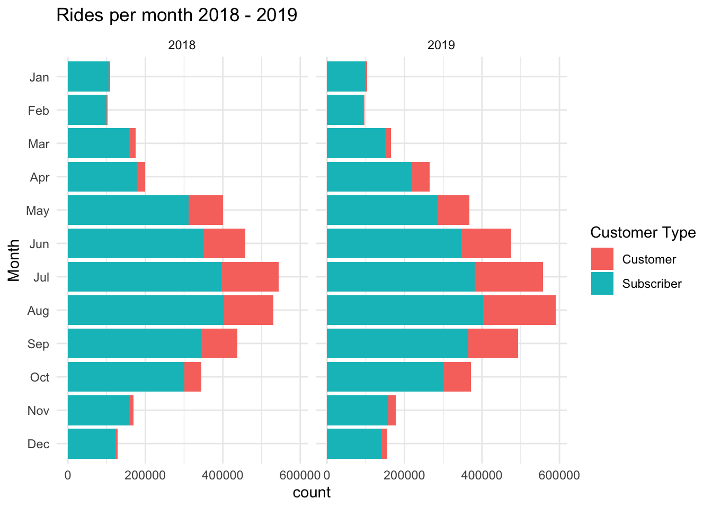

[1] "trip_id" "start_time" "stop_time"
[4] "bike_id" "trip_duration" "from_station_id"
[7] "from_station_name" "to_station_id" "to_station_name"
[10] "user_type" "gender" "birth_year" Divvy and Chicago Congestion Data
A Google Coursera Capstone
Summary
For this project, I examined the relationship between Divvy ridership and traffic congestion in Chicago. All of the data comes from the Chicago Open Data Portal, and all of the data cleaning steps were done in R. To provide structure to this project, I created the headings based on Google’s Data Analysis methodology, with a small change to showcase a community organizer’s idea on why leveraging data is a corner stone of our theory of change.
Ask
The idea of this project is to show what, if any, relationship exists between Divvy Ridership and traffic congestion in the City of Chicago. I imagine that this project would be a small step in a much larger project of traffic analysis within the larger Chicagoland area, with the goal of reducing congestion and improving commute times for those of us who live and work in this amazing city.
Stakeholders
At a minimum, the stakeholders of this particular project would be:
- [The City of Chicago Department of Transportation]https://www.chicago.gov/city/en/depts/cdot.html
- The Illinois Department of Transportation
- The Cook County Department of Transportation and Highways
- Community Organizations in all 52 wards, examples of which are:
- Bike Grid Now!
- Southwest Environmental Alliance
- Specific Alderman in City Government
Questions for the Data
The scope of traffic congestion is difficult to define: In addition to lane patterns, population density, transit locations, and weather patterns, congestion will be impacted by road and CTA construction, sporting events, concerts, and conventions, and other seasonal activities. In addition to the open data portal, historical weather patterns and city events should be included in a larger analysis. Given the size and scope or the larger project, deconstruction into various sections is the most efficient way to define and answer the questions.
At a minimum, the stakeholders would want to know:
- What is the relationship between Divvy Ridership and congestion patterns in Chicago?
- What additional areas of research need to be included in the final analysis of Divvy’s impact on congestion.
Caveats
Because the data is limited to Divvy and Traffic Congestion by region, a number of confounds exist, and could be addressed in other analysis teams – specifically data about events in Chicago, weather data, and construction data are not included in the Divvy or Congestion data set.
Stake
Organizers love to talk about their connection with a particular issue, candidate, or action. We’ve defined this as a “stake.” This allows an organizer to stay connected to their community and focused on the impact of the issue. Bike use and traffic congestion are exceptionally important to the neighbors in my community, and even more so to my fellow organizers. If this was a real project, I could see a data-focused member of a community organization or task force establishing project metrics and processing the data.
Prepare
Google’s prepare phase is the process of collecting data sources and defining he metrics used to “answer the ask.” To this ends, I looked to secure quality, open source data from the Chicago’s Open Data portal. Because this data is well maintained by the city, and it does not involve propriety customer or client data, it should have been easy to use the RSocrata package. However, during the prepare phase, instead of exporting the Socrata query, I simply downloaded the entire data set.
Future project will have involve quering the data through Socrata to limit the amount of data being downloaded and keep the file sizes to a reasonable level. There is a benefit to this extra data: It required significant cleaning and allowed me to learn how to leverage R and Rstudio with large (4+ gigabytes) of data and improve performance.
What data is being used?
This case study milts the data to two data sets: The Divvy Ride Share and the City of Chicago Traffic Congestion by Region data set.
Divvy
The data analyzed is 7,420,746 unique rides from 2018-03-09 to 2019-12-31. This represents a cross over of the most recent data between both data sets. These fields include:
The original data also includes GIS geography data that is separated into two other data sets: divvy_from and divvy_to. The data cleaning process that created these data sets is detailed in the [Making Simple Features] section of this document.
Congestion Zones
[1] "time" "region_id" "speed" "region" "bus_count"
[6] "num_reads" "hour" "day_of_week" "month" "description"
[11] "record_id" "west" "east" "south" "north"
[16] "nw_location" "se_location" "start_year" The congestion zone data also contains regions where speed, time, and bus counts are measured - a total of 2,534,656 from 2018-03-09 to 2019-12-31. How this data was transformed into GIS features are documented in the Process section of this document.
Metrics
Determining the relationship between Divvy riders and Chicago traffic patterns requires the following metrics:
- What are the Divvy rental patterns by:
- Day
- Month
- Congestion Region
- What are the average speeds in congestion regions during weekday rush hour?
- How many divvy rides begin or end in a congestion region?
Process
The processing step involves cleaning the data to make sure it can be utilized in the analysis. Divvy and the congestion data set required extensive processing. At a minimum, each data set had to:
- To have similar date ranges and date types.
- To have similar column names.
- To have their geographic data separated and transformed into Simple Features
Creating the Congestion Zones
The congestion zones data set has GIS data, but it is not a GIS feature. This means that without significant transformation, no GIS analysis could be done. The following code chunk illustrates the issue:
library(tidyverse)
congestion_2018 %>%
distinct(region_id, .keep_all = TRUE) |>
arrange(region_id) |>
select(region, west, east, south, north) |>
head(19) |>
gt::gt(caption = "Each of the 19 Congestion Zones") |>
gt::tab_header(title = gt::md("**Chicago Congestion Zone**")) |>
gt::cols_label(region = "Region",
west = "West",
east = "East",
south = "South",
north = "North") |>
gt::opt_stylize(style = 1, color = "gray") | Chicago Congestion Zone | ||||
| Region | West | East | South | North |
|---|---|---|---|---|
| Rogers Park - West Ridge | -87.70964 | -87.65456 | 41.99795 | 42.02644 |
| Far North West | -87.84621 | -87.74746 | 41.96067 | 42.01910 |
| North Park-Albany-Linconl Sq | -87.74746 | -87.67459 | 41.96067 | 41.99795 |
| Edge Water-Uptown | -87.67459 | -87.64644 | 41.96067 | 41.99795 |
| Dunning-Portage-Belmont Cragn | -87.84621 | -87.74746 | 41.90927 | 41.96067 |
| Irving Park-Avondale-North Ctr | -87.74746 | -87.67459 | 41.93184 | 41.96067 |
| Hermosa-Logan Square | -87.74746 | -87.67459 | 41.90927 | 41.93184 |
| Lincoln Park-Lake View | -87.67459 | -87.61911 | 41.91056 | 41.96067 |
| Austin | -87.77595 | -87.74746 | 41.86613 | 41.90927 |
| Humboldt-Garfield Prk E/W | -87.74746 | -87.69162 | 41.86613 | 41.90927 |
| West Town-Near West | -87.69162 | -87.64721 | 41.86613 | 41.91056 |
| Near North | -87.64721 | -87.62308 | 41.88886 | 41.91140 |
| Chicago Loop | -87.64721 | -87.62308 | 41.86613 | 41.88886 |
| Lawndale N/S | -87.74746 | -87.68537 | 41.82279 | 41.86613 |
| Bridgeport-McKinley-Lower West | -87.68537 | -87.63632 | 41.82279 | 41.86613 |
| Near South-Douglas | -87.63632 | -87.59795 | 41.82279 | 41.86613 |
| Midway-Garfield Rdg-Clearing | -87.80219 | -87.74746 | 41.76407 | 41.82279 |
| South West Side | -87.74746 | -87.68373 | 41.76407 | 41.82279 |
| New City-Englewood-W Englewood | -87.68373 | -87.63632 | 41.76407 | 41.82279 |
Each region is bounded by either a point of Latitude or Longitude. To create an actual GIS feature the North and West, and the South and East columns, had to be combined to create a simple GIS feature.
library(sf)
library(tidyverse)
library(gt)
# a for loop that identifies the east, west, north and south points and then turns them into simple GIS features
congestion_regions = tibble()
for(geo in 1:nrow(congestion_2018_geo)){
box <- st_bbox(c(xmax = congestion_2018_geo[geo, ]$east,
xmin = congestion_2018_geo[geo, ]$west,
ymax = congestion_2018_geo[geo, ]$north,
ymin = congestion_2018_geo[geo, ]$south),
crs = 4326)
box <- st_as_sfc(box)
regions <- tibble(congestion_2018[geo, ]$region_id, box)
congestion_regions <- rbind(congestion_regions, regions)
}
congestion_regions <- congestion_regions %>%
rename(region_id = `congestion_2018[geo, ]$region_id`) %>%
arrange(region_id)
congestion_regions |>
glimpse()Rows: 29
Columns: 2
$ region_id <dbl> 1, 2, 3, 4, 6, 7, 8, 9, 10, 11, 12, 13, 14, 15, 17, 18, 19, …
$ box <POLYGON [°]> POLYGON ((-87.66251 41.6774..., POLYGON ((-87.70964 …Best practice with R is to avoid loops. However, in order to create a bounding box, each cardinal direction in a row has to be set up to match the inputs of a the sf function st_bbox. This code block creates the GIS data necessary for answering the questions.
Creating Divvy Simple Features
divvy_from <- read_rds(here::here("inputs", "divvy_2018_from_geo.RDS"))
divvy_to <- read_rds(here::here("inputs", "divvy_2018_to_geo.RDS"))Analysis
Analysis is where all of the work comes together, including specific metrics, data visualizations, and noting any interesting outliers.
Divvy Rental Patterns
Divvy has three kinds of users: Customer, Dependent, and Subscriber. A customer indicates a rental point of sale. Dependent is a test ride. Subscriber indicates the rider has a subscription with Divvy.
Historical Data

The bar chart shows a clear pattern of growth year over year for Divvy ridership, with a clear pattern of Subscribers riding during the traditional work week. A more thorough analysis of the historical data is beyond the scope of this project. This data visualization establishes the pattern of ridership for Divvy and provides some context for what that pattern is for Customers and Subscribers.
| Day | Customer Type | 2013 | 2014 | 2015 | 2016 | 2017 |
|---|---|---|---|---|---|---|
| Sun | Customer | 79,963 | 190,026 | 207,956 | 218,278 | 201,476 |
| Sun | Subscriber | 32,493 | 160,719 | 216,818 | 269,682 | 291,076 |
| Mon | Customer | 41,866 | 89,034 | 106,276 | 118,778 | 106,774 |
| Mon | Subscriber | 64,042 | 253,095 | 340,172 | 433,389 | 472,221 |
| Tue | Customer | 32,807 | 65,035 | 85,004 | 78,180 | 77,836 |
| Tue | Subscriber | 69,896 | 270,355 | 376,493 | 463,519 | 501,054 |
| Wed | Customer | 30,221 | 63,419 | 84,947 | 59,287 | 61,801 |
| Wed | Subscriber | 66,828 | 273,822 | 385,337 | 420,457 | 481,108 |
| Thu | Customer | 33,599 | 73,510 | 91,534 | 67,437 | 67,910 |
| Thu | Subscriber | 63,272 | 269,220 | 365,839 | 434,845 | 482,156 |
| Fri | Customer | 47,721 | 106,810 | 116,893 | 101,940 | 96,453 |
| Fri | Subscriber | 67,643 | 260,799 | 338,585 | 427,336 | 458,204 |
| Sat | Customer | 90,575 | 203,406 | 237,263 | 214,573 | 224,611 |
| Sat | Subscriber | 38,862 | 175,384 | 229,976 | 287,592 | 306,316 |
Current Data: Day

Current Data: Month

This same data set can be used transformed into a table showing percentage of change over time. This is beyond the scope of this analysis; however, it has been my experience that this kind of metric is often asked for in addition to the ask.
library(tidyverse)
library(gt)
options(scipen = 999) #eliminate scientific notation in R
divvy_growth_projections <- divvy_2018 %>%
select(1:3, "user_type") %>%
mutate(month = month(start_time, label = TRUE),
year = year(start_time),
month_year = paste(month,
year,
sep = "-")) %>%
filter(user_type != "Dependent") %>%
select(-2, -3) %>%
group_by(month, year, user_type) %>%
summarize(count = n()) %>%
select(year, month, user_type, count)`summarise()` has grouped output by 'month', 'year'. You can override using the
`.groups` argument.divvy_growth_projections <- divvy_growth_projections %>%
pivot_wider(names_from = c(year), values_from = c(count))
divvy_growth_projections %>%
filter(user_type == "Subscriber") %>%
mutate(percent_growth = ((`2019` - `2018`) / `2018`) * 100) # A tibble: 12 × 5
# Groups: month [12]
month user_type `2018` `2019` percent_growth
<ord> <chr> <int> <int> <dbl>
1 Jan Subscriber 105707 98670 -6.66
2 Feb Subscriber 99299 93548 -5.79
3 Mar Subscriber 158577 149688 -5.61
4 Apr Subscriber 178273 217566 22.0
5 May Subscriber 311640 285834 -8.28
6 Jun Subscriber 350264 345177 -1.45
7 Jul Subscriber 394437 381683 -3.23
8 Aug Subscriber 401989 403295 0.325
9 Sep Subscriber 344211 364046 5.76
10 Oct Subscriber 301196 300751 -0.148
11 Nov Subscriber 157767 158447 0.431
12 Dec Subscriber 121487 138662 14.1 divvy_growth_projections_customer <- divvy_growth_projections %>%
filter(user_type == "Customer") %>%
mutate(percent_growth = ((`2019` - `2018`) / `2018`) * 100) Congestion
here() starts at /Users/marty/Documents/Local Dev Projects/R/coursera_cap_stoneWhat are the average speeds in congestion regions during weekday rush hour?
How many divvy rides begin or end in a congestion region?
Recommendations
Bold italic
- One
- Two
- Three
- Two